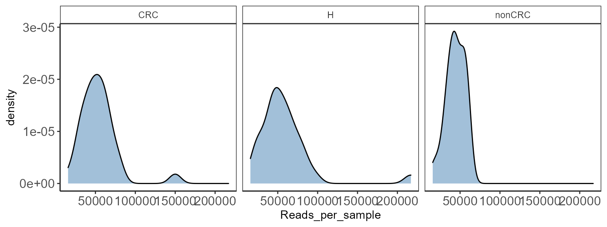
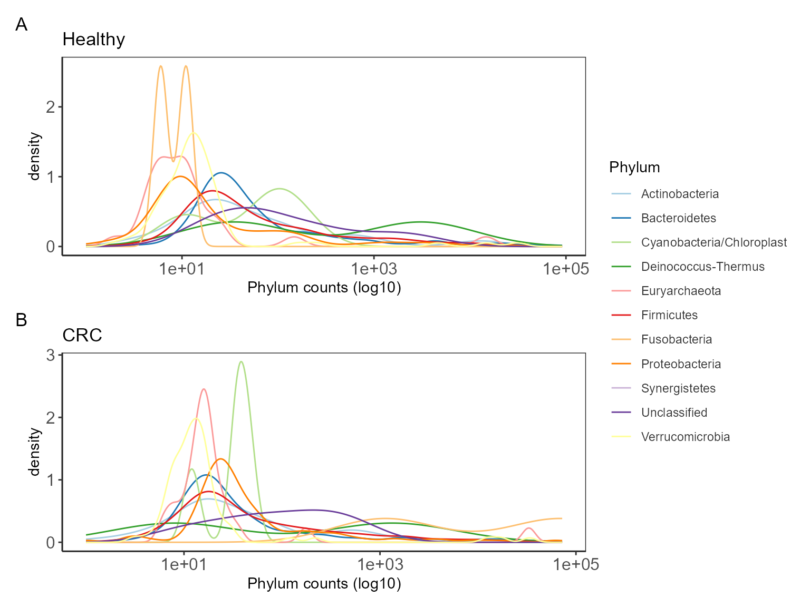
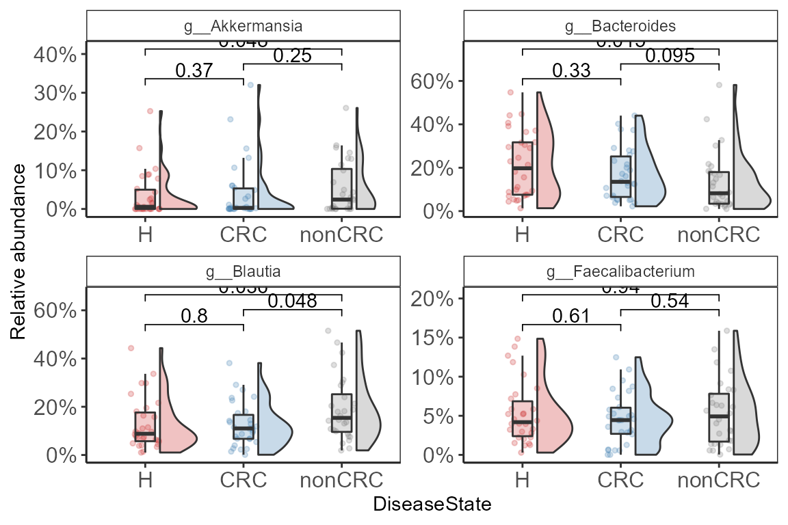
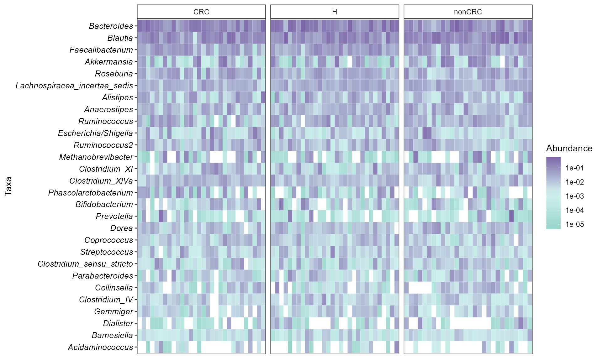

Introduction to microbiomeutilities
Source:vignettes/microbiomeutilities.Rmd
microbiomeutilities.RmdThe microbiomeutilities R package is part of the microbiome-verse tools that provides additional data handling and visualization support for the microbiome R/BioC package
Philosophy: “Seemingly simple tasks for experienced R users can always be further simplified for novice users”
Install
install.packages("devtools") devtools::install_github("microsud/microbiomeutilities")
Load libraries
Basics
Example data
Package data from Zackular et al., 2014: The Gut Microbiome Modulates Colon Tumorigenesis.
Import test data.
data("zackular2014") ps0 <- zackular2014 ps0 #> phyloseq-class experiment-level object #> otu_table() OTU Table: [ 2078 taxa and 88 samples ] #> sample_data() Sample Data: [ 88 samples by 7 sample variables ] #> tax_table() Taxonomy Table: [ 2078 taxa by 7 taxonomic ranks ]
The print_ps from microbiomeutilities can give additional information. See also microbiome::summarize_phyloseq.
print_ps(ps0) #> 01] ntaxa = 2078 #> 02] nsamples = 88 #> 03] nsamplesvariables = 7 #> 04] nranks = 7 #> 05] Min. number of reads = 15704 #> 06] Max. number of reads = 216888 #> 07] Total number of reads = 4594626 #> 08] Average number of reads = 52211.66 #> 09] Median number of reads = 49415.5 #> 10] Sparsity = 0.728426590252865 #> 11] Number of singletons = 0 #> 12] % of taxa that are singletons #> (i.e. exactly one read detected across all samples) = 0
Formatting the Phyloseq Object
Most commonly it is observed that the taxonomy file has classification until a given taxonomic level. We can change the names in both otu table and taxonomy table with the best taxonomic classification available. This can be useful if the analysis has to be done at OTU/ASVs level. Only ID are less useful.
Check the taxonomy in phyloseq object.
| Domain | Phylum | Class | Order | Family | Genus | Species | |
|---|---|---|---|---|---|---|---|
| d__denovo1773 | k__Bacteria | p__Bacteroidetes | c__Bacteroidia | o__Bacteroidales | f__Bacteroidaceae | g__Bacteroides | s__ |
| d__denovo1771 | k__Bacteria | p__Bacteroidetes | c__Bacteroidia | o__Bacteroidales | f__Bacteroidaceae | g__Bacteroides | s__ |
| d__denovo1776 | k__Bacteria | p__Firmicutes | c__Clostridia | o__Clostridiales | f__Ruminococcaceae | g__ | s__ |
| d__denovo1777 | k__Bacteria | p__Bacteroidetes | c__Bacteroidia | o__Bacteroidales | f__Bacteroidaceae | g__Bacteroides | s__ |
| d__denovo1775 | k__Bacteria | p__Firmicutes | c__Clostridia | o__Clostridiales | f__Lachnospiraceae | g__Blautia | s__ |
| d__denovo2639 | k__Bacteria | p__Bacteroidetes | c__Bacteroidia | o__Bacteroidales | f__Bacteroidaceae | g__Bacteroides | s__ |
Some have only g__ of s__ information.
data("zackular2014") p0 <- zackular2014 # reduce size for example ps0 <- core(p0, detection = 10, prevalence = 20 / 100) # Add a prefix to taxa labels ps0.f2 <- format_to_besthit(ps0, prefix = "MyBug-") kable(head(tax_table(ps0.f2))[3:6])
| Domain | Phylum | Class | Order | Family | Genus | Species | best_hit | |
|---|---|---|---|---|---|---|---|---|
| MyBug-d__denovo165:f__Ruminococcaceae | Bacteria | Firmicutes | Clostridia | Clostridiales | Ruminococcaceae | f__Ruminococcaceae | f__Ruminococcaceae | MyBug-d__denovo165:f__Ruminococcaceae |
| MyBug-d__denovo167:g__Coprococcus | Bacteria | Firmicutes | Clostridia | Clostridiales | Lachnospiraceae | Coprococcus | g__Coprococcus | MyBug-d__denovo167:g__Coprococcus |
| MyBug-d__denovo166:o__Clostridiales | Bacteria | Firmicutes | Clostridia | Clostridiales | o__Clostridiales | o__Clostridiales | o__Clostridiales | MyBug-d__denovo166:o__Clostridiales |
| MyBug-d__denovo161:g__Roseburia | Bacteria | Firmicutes | Clostridia | Clostridiales | Lachnospiraceae | Roseburia | g__Roseburia | MyBug-d__denovo161:g__Roseburia |
Now the available taxonomy is added.
As can be seen, the rownames have the OTUIDs and available taxonomic name(s).
Distribution of reads
Useful for QC purposes. Check for distribution of sequencing depth.
data("zackular2014") p0 <- zackular2014 p <- plot_read_distribution(p0, groups = "DiseaseState", plot.type = "density") print(p + theme_biome_utils())

This is a diagnostic step. Key to check if there is variation between groups that will be compared for downstream analysis.
Convert phyloseq object to long data format
Useful if the user wants to plot specific features.
Converting to long data format opens several opportunities to work with Tidyverse.
data("zackular2014") p0 <- zackular2014 # reduce size for example ps0 <- core(p0, detection = 10, prevalence = 20 / 100) pseq_df <- phy_to_ldf(ps0, transform.counts = NULL) #> An additonal column Sam_rep with sample names is created for reference purpose kable(head(pseq_df))
| OTUID | Domain | Phylum | Class | Order | Family | Genus | Species | Sam_rep | Abundance | investigation_type | project_name | DiseaseState | age | body_product | FOBT.result | material |
|---|---|---|---|---|---|---|---|---|---|---|---|---|---|---|---|---|
| d__denovo66 | k__Bacteria | p__Firmicutes | c__Clostridia | o__Clostridiales | f__Lachnospiraceae | g__Ruminococcus2 | s__ | Adenoma10-2757 | 27 | metagenomic | The Gut Microbiome Improves Predictive Models for Diagnosis of Colorectal Cancer | nonCRC | 37 | feces | negative | feces |
| d__denovo175 | k__Bacteria | p__Bacteroidetes | c__Bacteroidia | o__Bacteroidales | f__Rikenellaceae | g__Alistipes | s__ | Adenoma10-2757 | 0 | metagenomic | The Gut Microbiome Improves Predictive Models for Diagnosis of Colorectal Cancer | nonCRC | 37 | feces | negative | feces |
| d__denovo165 | k__Bacteria | p__Firmicutes | c__Clostridia | o__Clostridiales | f__Ruminococcaceae | g__ | s__ | Adenoma10-2757 | 49 | metagenomic | The Gut Microbiome Improves Predictive Models for Diagnosis of Colorectal Cancer | nonCRC | 37 | feces | negative | feces |
| d__denovo167 | k__Bacteria | p__Firmicutes | c__Clostridia | o__Clostridiales | f__Lachnospiraceae | g__Coprococcus | s__ | Adenoma10-2757 | 155 | metagenomic | The Gut Microbiome Improves Predictive Models for Diagnosis of Colorectal Cancer | nonCRC | 37 | feces | negative | feces |
| d__denovo166 | k__Bacteria | p__Firmicutes | c__Clostridia | o__Clostridiales | f__ | g__ | s__ | Adenoma10-2757 | 0 | metagenomic | The Gut Microbiome Improves Predictive Models for Diagnosis of Colorectal Cancer | nonCRC | 37 | feces | negative | feces |
| d__denovo161 | k__Bacteria | p__Firmicutes | c__Clostridia | o__Clostridiales | f__Lachnospiraceae | g__Roseburia | s__ | Adenoma10-2757 | 11 | metagenomic | The Gut Microbiome Improves Predictive Models for Diagnosis of Colorectal Cancer | nonCRC | 37 | feces | negative | feces |
Taxa overview
One of the first questions arise regarding which taxa are present , how they are distributed in the data. This can be done with following functionality.
Check distribution
A quick check to see how different taxa are distributed in your data.
library(microbiomeutilities) library(RColorBrewer) library(patchwork) library(ggpubr) data("zackular2014") pseq <- zackular2014 # check healthy health_ps <- subset_samples(pseq, DiseaseState=="H") p_hc <- taxa_distribution(health_ps) + theme_biome_utils() + labs(title = "Healthy") # check CRC crc_ps <- subset_samples(pseq, DiseaseState=="CRC") p_crc <- taxa_distribution(crc_ps) + theme_biome_utils() + labs(title = "CRC") # harnessing the power of patchwork p_hc / p_crc + plot_layout(guides = "collect") + plot_annotation(tag_levels = "A")

There are Cyanobacteria/Chloroplast related sequences which can be removed if not expected in the samples.
Dominant taxa
Sometimes, we are interested in identifying the most dominant taxa in each sample. We may also wish to check what percent of samples within a given group are these taxa dominating.
library(microbiomeutilities) library(dplyr) data("zackular2014") p0 <- zackular2014 p0.gen <- aggregate_taxa(p0,"Genus") x.d <- dominant_taxa(p0,level = "Genus", group="DiseaseState") head(x.d$dominant_overview) #> # A tibble: 6 x 5 #> # Groups: DiseaseState [3] #> DiseaseState dominant_taxa n rel.freq rel.freq.pct #> <fct> <chr> <int> <dbl> <chr> #> 1 H g__Bacteroides 15 50 50% #> 2 nonCRC g__Blautia 13 46.4 46% #> 3 CRC g__Bacteroides 9 30 30% #> 4 CRC g__Blautia 9 30 30% #> 5 H g__Blautia 7 23.3 23% #> 6 nonCRC g__Bacteroides 6 21.4 21%
As seen in the table above, 50% of the samples in H group are dominated by *g__Bacteroides* and so on…
Get taxa summary
This can be used for entire dataset.
library(microbiomeutilities) data("zackular2014") p0 <- zackular2014 tx.sum1 <- taxa_summary(p0, "Phylum") #> Data provided is not compositional #> will first transform tx.sum1 #> Taxa Max.Rel.Ab Mean.Rel.Ab #> 1 p__Euryarchaeota 0.218508035656191 0.0200267274400673 #> 2 p__ 0.0359956743395643 0.00213630393381328 #> 3 p__Actinobacteria 0.189937172231165 0.0294096453288836 #> 4 p__Bacteroidetes 0.703769740193581 0.244709411770076 #> 5 p__Cyanobacteria/Chloroplast 0.00391786546652736 0.000248991452140149 #> 6 p__Deinococcus-Thermus 0.0306807689079157 0.00136619388828292 #> 7 p__Firmicutes 0.935779308307329 0.609116019352896 #> 8 p__Fusobacteria 0.390135934239562 0.0079458294240542 #> 9 p__Proteobacteria 0.403932082216265 0.04116346455827 #> 10 p__Synergistetes 0.0106576610162058 0.000207008030950549 #> 11 p__Verrucomicrobia 0.320077232101149 0.0436704048205656 #> Median.Rel.Ab Std.dev #> 1 4.08341966447163e-05 0.0445500008069431 #> 2 0.000335981950200747 0.00577447214134393 #> 3 0.0152970058974793 0.0361457627428506 #> 4 0.193736718210234 0.183986562646175 #> 5 2.58996131628288e-05 0.00070384339925814 #> 6 0 0.00449398785197828 #> 7 0.598709982286244 0.182320763133074 #> 8 0 0.0514603201611758 #> 9 0.0130121759294526 0.0774502267516943 #> 10 0 0.00119199461324549 #> 11 0.00665688163392832 0.0679829229763011
Get taxa summary by group(s)
For group specific abundances of taxa get_group_abundances.
library(microbiomeutilities) data("zackular2014") p0 <- zackular2014 grp_abund <- get_group_abundances(p0, level = "Phylum", group="DiseaseState", transform = "compositional")
How to visualize these data?
mycols <- c("brown3", "steelblue","grey50") # clean names grp_abund$OTUID <- gsub("p__", "",grp_abund$OTUID) grp_abund$OTUID <- ifelse(grp_abund$OTUID == "", "Unclassified", grp_abund$OTUID) mean.plot <- grp_abund %>% # input data ggplot(aes(x= reorder(OTUID, mean_abundance), # reroder based on mean abundance y= mean_abundance, fill=DiseaseState)) + # x and y axis geom_bar( stat = "identity", position=position_dodge()) + scale_fill_manual("DiseaseState", values=mycols) + # manually specify colors theme_bw() + # add a widely used ggplot2 theme ylab("Mean Relative Abundance") + # label y axis xlab("Phylum") + # label x axis coord_flip() # rotate plot mean.plot

This plot is diagnostic to have an idea about the taxonomy in each group. Statements based on comparisons between groups may not make sense here because only mean abundance values are plotted, and not standard deviation within groups. For visualizing error bars and more check Statistical tools for high-throughput data analysis.
Find samples dominated by specific taxa
Finding samples dominated by user provided taxa in a phyloseq object. This is useful especially if user suspects a taxa to be contaminant and wishes to identify which samples are dominated by the contaminant taxa.
library(microbiomeutilities) data("zackular2014") p0 <- zackular2014 p0.f <- aggregate_taxa(p0, "Genus") bac_dom <- find_samples_taxa(p0.f, taxa = "g__Bacteroides") bac_dom #> [1] "Adenoma14-2817" "Adenoma20-2995" "Adenoma21-3129" #> [4] "Adenoma22-3133" "Adenoma24-3217" "Adenoma9-2717" #> [7] "Cancer10-2567" "Cancer11-2573" "Cancer1-2355" #> [10] "Cancer17-2625" "Cancer20-2667" "Cancer22-2703" #> [13] "Cancer30-2863" "Cancer5-2523" "Cancer9-2547" #> [16] "Healthy10-3087" "Healthy11-3123" "Healthy1-2027" #> [19] "Healthy13-3241" "Healthy14-3245" "Healthy16-3251" #> [22] "Healthy17-3257" "Healthy18-3293" "Healthy19-3339" #> [25] "Healthy20-3341" "Healthy26-3407" "Healthy30-3291-66" #> [28] "Healthy6-3061" "Healthy8-3073" "Healthy9-3075" #get samples dominated by g__Bacteroides ps.sub <- prune_samples(sample_names(p0.f) %in% bac_dom, p0.f)
Alpha diversity
Rarefaction curves for alpha diversity indices
A common approach to check for sequencing depth and diversity measures.
Here, we can access the numerous alpha diversity measures supported by microbiome R package.
NOTE: This can take sometime to complete.
library(microbiomeutilities) data("zackular2014") p0 <- zackular2014 # set seed set.seed(1) subsamples <- seq(0, 5000, by=100)[-1] #subsamples = c(10, 5000, 10000, 20000, 30000) p <- plot_alpha_rcurve(p0, index="observed", subsamples = subsamples, lower.conf = 0.025, upper.conf = 0.975, group="DiseaseState", label.color = "brown3", label.size = 3, label.min = TRUE) # change color of line mycols <- c("brown3", "steelblue","grey50") p <- p + scale_color_manual(values = mycols) + scale_fill_manual(values = mycols) print(p)

Plot alpha diversities
Utility plot function for diversity measures calculated by microbiome package.
library(microbiome) data("zackular2014") ps0 <- zackular2014 mycols <- c("brown3", "steelblue","grey50") p <- plot_alpha_diversities(ps0, type = "dominance", index.val = "all", plot.type = "stripchart", variableA = "DiseaseState", palette = mycols) p <- p + theme_biome_utils() + ggplot2::theme(legend.position = "top", text = element_text(size=14)) print(p)

comps <- make_pairs(sample_data(ps0)$DiseaseState) p <- p + stat_compare_means( comparisons = comps, label = "p.format", tip.length = 0.05, method = "wilcox.test") p #> Warning in wilcox.test.default(c(7855, 4967, 16964, 6997, 11425, 17013, : cannot #> compute exact p-value with ties

Alternatively, one can plot one index at a time with pair-wise stats.
library(gghalves) library(microbiomeutilities) data("zackular2014") p0 <- zackular2014 mycols <- c("brown3", "steelblue","grey50") p.m <- plot_diversity_stats(p0, group = "DiseaseState", index = "diversity_shannon", group.order = c("H", "CRC", "nonCRC"), group.colors = mycols, label.format="p.format", stats = TRUE) p.m + ylab("Shannon Diversity") + xlab("")

Composition plots
Ternary plot
library(microbiome) library(microbiomeutilities) library(dplyr) data("zackular2014") p0 <- zackular2014 tern_df <- prep_ternary(p0, group="DiseaseState", abund.thres=0.000001, level= "Genus", prev.thres=0.01) head(tern_df) #> # A tibble: 6 x 11 #> # Groups: unique [6] #> unique CRC H nonCRC Domain Phylum Class Order Family Genus OTUID #> <chr> <dbl> <dbl> <dbl> <chr> <chr> <chr> <chr> <chr> <chr> <chr> #> 1 Acetan~ 0.00995 0.0135 0.00858 Bacter~ Firmic~ Clost~ Clos~ Rumin~ Acet~ Acet~ #> 2 Acidam~ 0.115 0.164 0.0846 Bacter~ Firmic~ Negat~ Sele~ Acida~ Acid~ Acid~ #> 3 Acinet~ 0.0108 0.0312 0.00762 Bacter~ Proteo~ Gamma~ Pseu~ Morax~ Acin~ Acin~ #> 4 Actino~ 0.0169 0.0338 0.0218 Bacter~ Actino~ Actin~ Acti~ Actin~ Acti~ Acti~ #> 5 Akkerm~ 1.26 1.05 1.53 Bacter~ Verruc~ Verru~ Verr~ Verru~ Akke~ Akke~ #> 6 Alisti~ 0.929 0.894 0.654 Bacter~ Bacter~ Bacte~ Bact~ Riken~ Alis~ Alis~
# install.packages("ggtern") require(ggtern) # Replace empty with Other tern_df$Phylum[tern_df$Phylum==""] <- "Other" ggtern(data=tern_df, aes(x=CRC, y=H, z=nonCRC)) + geom_point(aes(color= Phylum), alpha=0.25, show.legend=T, size=3) + #scale_size(range=c(0, 6)) + geom_mask() + scale_colour_brewer(palette = "Paired") + theme_biome_utils() detach("package:ggtern", unload=TRUE)
Plot taxa boxplot
Plot relative abundance of top taxa specified by user.
library(microbiomeutilities) library(RColorBrewer) data("zackular2014") ps0 <- zackular2014 mycols <- c("brown3", "steelblue", "grey50") pn <- plot_taxa_boxplot(ps0, taxonomic.level = "Family", top.otu = 3, group = "DiseaseState", add.violin= FALSE, title = "Top three family", keep.other = FALSE, group.order = c("H","CRC","nonCRC"), group.colors = mycols, dot.size = 1) print(pn + theme_biome_utils())

Plotting selected taxa
Using a list of taxa specified by the user for comparisons.
library(microbiome) library(microbiomeutilities) library(ggpubr) data("zackular2014") p0 <- zackular2014 p0.f <- format_to_besthit(p0) #top_taxa(p0.f, 5) select.taxa <- c("d__denovo1:g__Blautia", "d__denovo3:g__Bacteroides") mycols <- c("brown3", "steelblue", "grey50") p <- plot_listed_taxa(p0.f, select.taxa, group= "DiseaseState", group.order = c("H","CRC","nonCRC"), group.colors = mycols, add.violin = TRUE, violin.opacity = 0.3, dot.opacity = 0.25, box.opacity = 0.25, panel.arrange= "grid") #> An additonal column Sam_rep with sample names is created for reference purpose print(p + ylab("Relative abundance") + scale_y_continuous(labels = scales::percent))

Adding statistical test with ggpubr::stat_compare_means()
# If more than two variables comps <- make_pairs(sample_data(p0.f)$DiseaseState) print(comps) #> [[1]] #> [1] "CRC" "H" #> #> [[2]] #> [1] "CRC" "nonCRC" #> #> [[3]] #> [1] "H" "nonCRC" p <- p + stat_compare_means( comparisons = comps, label = "p.format", tip.length = 0.05, method = "wilcox.test") p + scale_y_continuous(labels = scales::percent) #> Warning in wilcox.test.default(c(0.0737753988097334, 0.0369437665507036, : #> cannot compute exact p-value with ties #> Warning in wilcox.test.default(c(0.0218880793675399, 0.000317486610347303, : #> cannot compute exact p-value with ties

Plot top four Genera
library(microbiome) library(microbiomeutilities) data("zackular2014") p0 <- zackular2014 p0.f <- aggregate_taxa(p0, "Genus") top_four <- top_taxa(p0.f, 4) top_four #> [1] "g__Bacteroides" "g__Blautia" "g__Faecalibacterium" #> [4] "g__Akkermansia" mycols <- c("brown3", "steelblue", "grey50") p <- plot_listed_taxa(p0.f, top_four, group= "DiseaseState", group.order = c("H","CRC","nonCRC"), group.colors = mycols, add.violin = TRUE, violin.opacity = 0.3, dot.opacity = 0.25, box.opacity = 0.25, panel.arrange= "wrap") comps <- make_pairs(sample_data(p0.f)$DiseaseState) p <- p + stat_compare_means( comparisons = comps, label = "p.format", tip.length = 0.05, method = "wilcox.test") print(p + ylab("Relative abundance") + scale_y_continuous(labels = scales::percent)) #> Warning in wilcox.test.default(c(0.0242631263865901, 5.19237758969832e-05, : #> cannot compute exact p-value with ties

Abundance-Prevalence relationship
Plots mean Abundance-Prevalence for taxa. Mean abundance, mean prevalence, and upper and lower confidence interval for each taxa is calculated by random sub-sampling.
This can be useful in identifying highly prevalent taxa and their mean relative abundance in a group of samples. Taxa that are highly prevalent with low variation in lower and upper CI can be identified at varying values of mean relative abundance. These are likely core taxa in the groups of samples.
See core microbiota analysis in microbiome R package
library(microbiomeutilities) library(dplyr) library(ggrepel) asv_ps <- zackular2014 asv_ps <- microbiome::transform(asv_ps, "compositional") # Select healthy samples asv_ps <- subset_samples(asv_ps, DiseaseState=="H") asv_ps <- core(asv_ps,detection = 0.0001, prevalence = 0.50) # reduce size for example asv_ps <- format_to_besthit(asv_ps) set.seed(14285) p_v <- plot_abund_prev(asv_ps, label.core = TRUE, color = "Phylum", # NA or "blue" mean.abund.thres = 0.01, mean.prev.thres = 0.99, dot.opacity = 0.7, label.size = 3, label.opacity = 1.0, nudge.label=-0.15, bs.iter=9, # increase for actual analysis e.g. 999 size = 20, # increase to match your nsamples(asv_ps) replace = TRUE, label.color="#5f0f40") p_v <- p_v + geom_vline(xintercept = 0.95, lty="dashed", alpha=0.7) + geom_hline(yintercept = 0.01,lty="dashed", alpha=0.7) + scale_color_brewer(palette = "Dark2") p_v

Heatmaps
Heatmap using phyloseq and pheatmap
Useful for visualizing differences in top OTUs between sample groups.
library(microbiomeutilities) library(pheatmap) library(RColorBrewer) data("zackular2014") ps0 <- zackular2014 taxa_names(ps0) <- gsub("d__denovo", "OTU:", taxa_names(ps0)) # create a gradient color palette for abundance grad_ab <- colorRampPalette(c("#faf3dd","#f7d486" ,"#5e6472")) grad_ab_pal <- grad_ab(10) # create a color palette for varaibles of interest meta_colors <- list(c("positive" = "#FFC857", "negative" = "#05B083"), c("CRC" = "steelblue", "nonCRC" = "grey50", "H"="brown3")) # add labels for pheatmap to detect names(meta_colors) <- c("FOBT.result", "DiseaseState") p <- plot_taxa_heatmap(ps0, subset.top = 25, VariableA = c("DiseaseState","FOBT.result"), heatcolors = grad_ab_pal, #rev(brewer.pal(6, "RdPu")), transformation = "log10", cluster_rows = T, cluster_cols = F, show_colnames = F, annotation_colors=meta_colors) #> Top 25 OTUs selected #> log10, if zeros in data then log10(1+x) will be used #> First top taxa were selected and #> then abundances tranformed to log10(1+X) #> Warning in transform(phyobj1, "log10"): OTU table contains zeroes. Using log10(1 #> + x) transform.

#the plot is stored here p$plot # table used for plot is here p$tax_tab[1:3,1:3]
Elegant option with ggplot2
library(microbiomeutilities) data("zackular2014") p0 <- zackular2014 p0.rel <- transform(p0, "compositional") #heat.cols <- c("#a8dadc","#457b9d", "#1d3557") # create a gradient color palette for abundance grad_ab <- colorRampPalette(c("#96d4ca","#d3f3f1", "#7c65a9")) heat.cols <- grad_ab(10) simple_heatmap(p0.rel, group.facet = "DiseaseState", group.order = NULL, abund.thres = 0.01, prev.thres = 0.1, level = "Genus", scale.color = "log10", na.fill = "white", color.fill = heat.cols, taxa.arrange=TRUE, remove.other=TRUE, panel.arrange="grid", ncol=NULL, nrow=NULL) #> Warning: Transformation introduced infinite values in discrete y-axis

For heatmap options see microbiome::heat() and ampvis2
For other longitudinal related functionality check the [Longitudinal data analysis and visualization] section in the Articles section.
MicrobiomeHD datasets as phyloseq objects
We provide access to a subset of studies included in the MicrobiomeHD database from Duvallet et al 2017: Meta-analysis of gut microbiome studies identifies disease-specific and shared responses. Nature communications.
The phyloseq objects are stored and accessed from microbiomedatarepo.
study <- list_microbiome_data(printtab = FALSE) knitr::kable(study)
Below is the per study reference.
NOTE: When using these studies, please cite Duvallet et al. 2017 and the respective studies.
file <- system.file("extdata", "microbiomeHD_ref.txt", package = "microbiomeutilities") reference <- read.table(file, header = T, sep = "\t") knitr::kable(reference)
Experimental
Plot ordination and core
library(microbiomeutilities) library(RColorBrewer) data("zackular2014") p0 <- zackular2014 ps1 <- format_to_besthit(p0) #ps1 <- subset_samples(ps1, DiseaseState == "H") ps1 <- prune_taxa(taxa_sums(ps1) > 0, ps1) prev.thres <- seq(.05, 1, .05) det.thres <- 10^seq(log10(1e-4), log10(.2), length = 10) pseq.rel <- microbiome::transform(ps1, "compositional") # reduce size for example pseq.rel <- core(pseq.rel, detection = 0.001, prevalence = 20 / 100) ord.bray <- ordinate(pseq.rel, "NMDS", "bray") p <- plot_ordiplot_core(pseq.rel, ord.bray, prev.thres, det.thres, min.prevalence = 0.9, color.opt = "DiseaseState", shape = NULL, Sample = TRUE) print(p)
Useful resources:
The microbiomeutilties depends on the phyloseq data structure and core Phyloseq functions.
Tools for microbiome analysis in R. Microbiome package URL: microbiome package.
For more tutorials and examples of data analysis in R please check:
Contributions are welcome:
Issue Tracker
Pull requests
Star us on the Github page
sessionInfo() #> R version 4.0.3 (2020-10-10) #> Platform: x86_64-w64-mingw32/x64 (64-bit) #> Running under: Windows 10 x64 (build 18363) #> #> Matrix products: default #> #> locale: #> [1] LC_COLLATE=English_Netherlands.1252 LC_CTYPE=English_Netherlands.1252 #> [3] LC_MONETARY=English_Netherlands.1252 LC_NUMERIC=C #> [5] LC_TIME=English_Netherlands.1252 #> #> attached base packages: #> [1] stats graphics grDevices utils datasets methods base #> #> other attached packages: #> [1] pheatmap_1.0.12 ggrepel_0.8.2 #> [3] gghalves_0.1.0 ggpubr_0.4.0 #> [5] patchwork_1.0.1 RColorBrewer_1.1-2 #> [7] tibble_3.0.4 knitr_1.30 #> [9] microbiomeutilities_1.00.13 dplyr_1.0.2 #> [11] microbiome_1.11.2 ggplot2_3.3.2 #> [13] phyloseq_1.33.0 #> #> loaded via a namespace (and not attached): #> [1] nlme_3.1-149 fs_1.5.0 rprojroot_1.3-2 #> [4] tools_4.0.3 backports_1.2.0 utf8_1.1.4 #> [7] R6_2.5.0 vegan_2.5-6 BiocGenerics_0.36.0 #> [10] mgcv_1.8-33 colorspace_1.4-1 permute_0.9-5 #> [13] rhdf5filters_1.2.0 ade4_1.7-15 withr_2.3.0 #> [16] tidyselect_1.1.0 curl_4.3 compiler_4.0.3 #> [19] cli_2.1.0 textshaping_0.1.2 Biobase_2.50.0 #> [22] desc_1.2.0 labeling_0.4.2 scales_1.1.1 #> [25] pkgdown_1.6.1 systemfonts_0.3.2 stringr_1.4.0 #> [28] digest_0.6.27 foreign_0.8-80 rmarkdown_2.4 #> [31] rio_0.5.16 XVector_0.30.0 pkgconfig_2.0.3 #> [34] htmltools_0.5.0 highr_0.8 readxl_1.3.1 #> [37] rlang_0.4.8 rstudioapi_0.11 farver_2.0.3 #> [40] generics_0.1.0 jsonlite_1.7.1 zip_2.1.1 #> [43] car_3.0-10 magrittr_1.5 biomformat_1.17.0 #> [46] Matrix_1.2-18 fansi_0.4.1 Rcpp_1.0.5 #> [49] munsell_0.5.0 S4Vectors_0.28.0 Rhdf5lib_1.12.0 #> [52] abind_1.4-5 ape_5.4-1 lifecycle_0.2.0 #> [55] stringi_1.5.3 yaml_2.2.1 carData_3.0-4 #> [58] MASS_7.3-53 zlibbioc_1.36.0 rhdf5_2.34.0 #> [61] Rtsne_0.15 plyr_1.8.6 grid_4.0.3 #> [64] parallel_4.0.3 forcats_0.5.0 crayon_1.3.4 #> [67] lattice_0.20-41 Biostrings_2.58.0 haven_2.3.1 #> [70] splines_4.0.3 multtest_2.45.0 hms_0.5.3 #> [73] pillar_1.4.6 igraph_1.2.6 ggsignif_0.6.0 #> [76] reshape2_1.4.4 codetools_0.2-16 stats4_4.0.3 #> [79] glue_1.4.2 evaluate_0.14 data.table_1.13.0 #> [82] vctrs_0.3.4 foreach_1.5.1 cellranger_1.1.0 #> [85] gtable_0.3.0 purrr_0.3.4 tidyr_1.1.2 #> [88] assertthat_0.2.1 xfun_0.17 openxlsx_4.2.2 #> [91] broom_0.7.1 rstatix_0.6.0 ragg_0.4.0 #> [94] survival_3.2-7 iterators_1.0.13 memoise_1.1.0 #> [97] IRanges_2.24.0 cluster_2.1.0 ellipsis_0.3.1